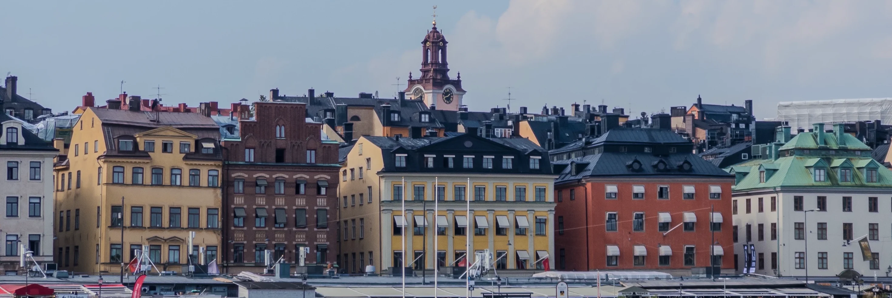

Colophon
Typography
Rooted in a mixture of Berlin techno and the Ancient Greece high priestess Pythia, Oracle by ABC Dinamo (Johannes Breyer) is an elegant sans-serif typeface with friendly, smooth contours and subtle contrast.
To set apart my writing from the rest, it is set in Otto by ABC Dinamo, a friendly serif family with a dynamic rhythm.
ABC Dinamo was kind enough to supply the font for this website. Thank you, Fabian.
Photography
All images were taken or created by Linus Rogge, if not stated otherwise. The copyright remains with the owner and it is not permitted to duplicate or re-use any media without written permission.
Technologies
Built with Next.js and Tailwind v4.
Quotes
The collection of various quotes, randomly displayed at the bottom line of this site, stems from multiple sources which include Cosmos,Aesop, Open, and others.
Inspiration
Pages that, in no particular order, inspired the current version of this site—visually, substantially, or personally.
Good people
There wouldn’t be enough space to list every important person here, but these are a few of the good souls that made a positive impact in my life.
- Anton Stallbörger
- Leonard Gorges
- Henri Bredt
- Neo Mohr
- Daniel Zenker
- Marcel Frommer
- Moritz Breuer
- Moritz Kindler
- Alexander Zank
- Leander Lenzing
- Caroline Lenzing
- Malte Körte
- David Reina
- Emil Dax
- Florian Kiem
- Nils Eller
- Valentin Rudloff
- Christof Geramb
- Sam di Mauro
- Piet Terheyden
- Aske Dørge

2025